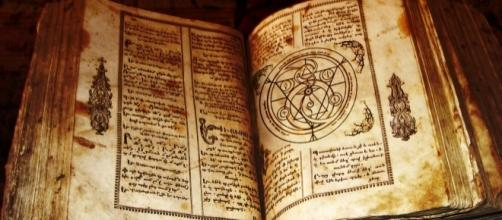

Nicolas Flamel

El Cristo Rey es un trabajo de alquimia sobre la transformación de los metales.
Nicolás Flamel (ca. 1330 Pontoise – 22 marzo 1418, París), fue un burgués parisino del siglo XIV, escribano
público, copista y librero juramentado.123
Personalidad medianamente destacada en su tiempo, logró poseer una fortuna modesta pero importante para su
entorno, parte de la cual empleó en donaciones y fundaciones piadosas. Esta riqueza fue el origen de la
leyenda según la cual la obtuvo por medio de la alquimia. Esta creencia, que las fuentes demuestran
infundada,45 llevó a que, desde finales del siglo XV y sobre todo en el XVII, se le adjudicasen tratados
alquímicos; el más notable de los cuales fue el Libro de las figuras jeroglíficas (Le Livre des figures
hiéroglyphiques) conocido a veces como Libro de Abraham, el judío, aparecido en 1612. Desde entonces se
convirtió en el alquimista francés por excelencia, pese a no haber practicado jamás la llamada “filosofía
hermética.
Influencia en la cultura popular:
- Este personaje histórico forma parte del mundo
fantástico de Harry Potter, siendo nombrado como amigo de Albus Dumbledore en el primer libro de la
serie, (Harry Potter y la piedra filosofal).
- También es mencionado en el bulo de los "Dossier
Secrets" como octavo Gran Maestre del Priorato de Sion,
sucesor en el cargo de Blanca de Évreux.
- Con base en esto, aparece citado en el libro El
código Da Vinci como un Gran Maestre del ficticio Priorato
de Sion.
- Es uno de los protagonistas de la serie de libros
"Los Secretos del inmortal Nicolas Flámel" de Michael
Scott.
- En la novela "Nuestra señora de París" de Víctor
Hugo es mencionado en varias oportunidades como importante
alquimista.
- En "El péndulo de Foucault" de Umberto Eco.
- El nombre de Nicolás Flamel es nombrado en la novela
de misterio "El club Dumas" de Arturo Pérez Reverte.
- En "Memorias de un médico" de Alejandro Dumas, el
protagonista José Bálsamo afirma haber trabajado con él.
- En "El Secreto Egipcio de Napoleón" de Javier
Sierra.
- En "El Mercurio, el Azufre y la Sal" de Manuel
Nonídez.
- En "El Gabinete del Alquimista Muerto" de Carlos
Poveda se le nombra repetidas veces junto con otros
alquimistas destacados como Paracelso, Basilio Valentín, Lulio o Cyliani.
- A su vez es el principal símbolo del Anime Fullmetal
Alchemist.
- Es un personaje del Anime Ulysses: Jehanne Darc to
Renkin no Kishi.
- Es personaje principal en el libro de Peter Harris,
El Secreto Del Peregrino.
- En el juego de Ragnarok Online hay un NPC con su
nombre, requerido para convertir a un personaje en
Alchemist.
- En el videojuego para PS2 Haunting Ground uno de los
objetos que se pueden usar durante el juego es un libro
de Nicolas Flamel.
- En la novela "El laboratorio de las almas" se
menciona a Nicolas Flamel como autor del libro "El martillo de
los demonios".
- Se lo nombra en la película " Así en la Tierra como
en el infierno" Se usa su lápida situada en el museo
para descubrir la ubicación de la "Piedra Filosofal".
- Se le nombra en la serie de ficción "The
librarians", en el tercer capítulo de la primera temporada.
- En la película de terror "Así en la tierra como en
el infierno" (así nombrada en Latinoamérica) se ve cómo
se explora y se encuentra la piedra filosofal, también mencionando a Nicolás Flamel.
- En París todavía existe su antigua mansión, 51 Rue
de Montmorency, bastante cerca del Louvre, convertido
actualmente en un restaurante muy orgulloso de su tradición alquímica como reclamo turístico.